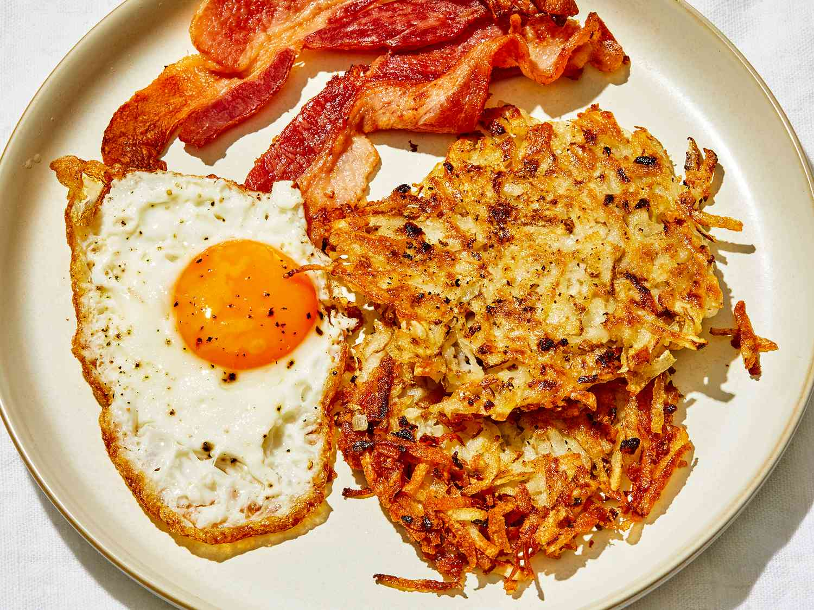

Crispy Hash Browns

Description
Crispy hash browns are a must for the full English breakfast. With just three ingredients and being freezeable, too, they're easy to add to your next fry up
Ingredients
- 3 medium-sized potatoes
- 50g butter, melted
- 4 tbsp sunflower oil
Steps
- Cook the potatoes in a saucepan of boiling water for 10 mins then drain and set aside until cool enough to handle.
- Coarsely grate the potatoes into a bowl discarding any skin that comes off in your hand as you grate. Season well with salt and pepper and pour over half the butter. Mix well then divide the mix into 8 and shape into patties or squares. The hash browns can be prepared a day ahead and chilled until ready to cook or frozen for up to a month.
- To cook, heat the oil and the remaining butter in a frying pan until sizzling and gently fry the hash browns, in batches if needed, for 4-5 mins on each side until crisp and golden. Serve straight away or leave in a low oven to keep warm.